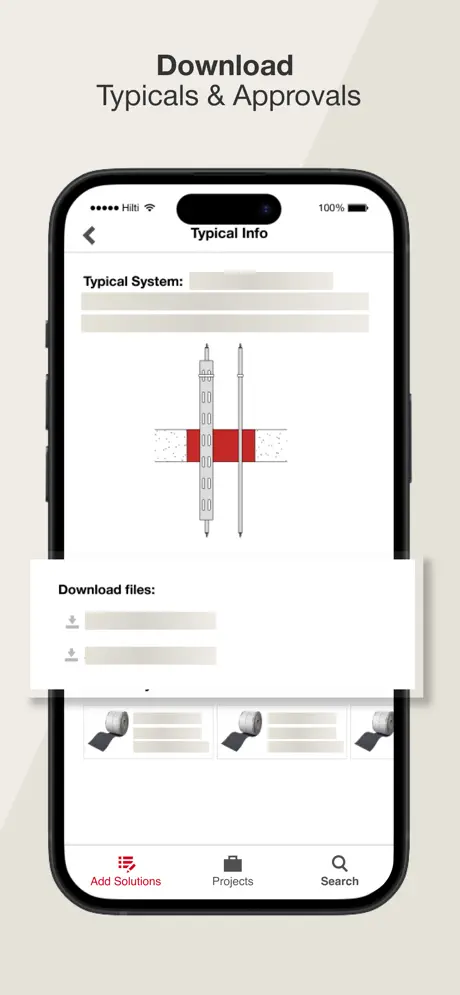
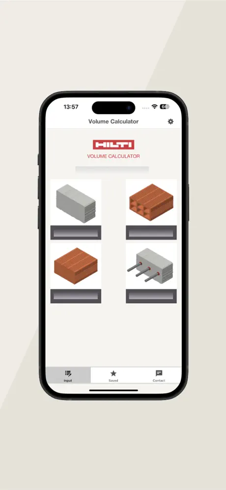
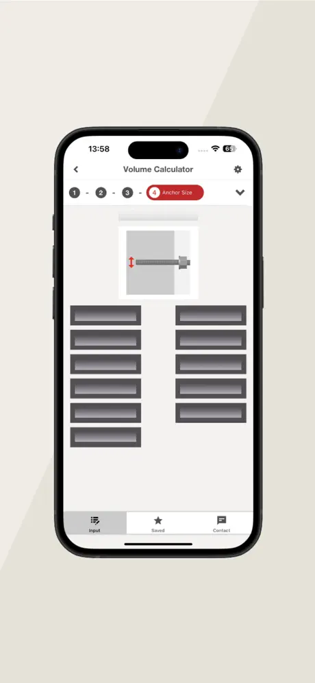

Multi-region firestop compliance software in .NET MAUI
Firestopping is about meeting building code first. If a contractor picks the wrong firestop system for a penetration, the building fails inspection. So the app they open on a jobsite has to be accurate, up to date and correct for their region, and it has to work in a basement riser with no signal.
About the source code: both apps are Hilti AG products and the code belongs to Hilti, so there's no public repository. Everything below is my own description of the work I did, in my own words. I'm happy to go deeper on a call or sketch any of it on a whiteboard.
Context & Scope
The Firestop Selector answers one question, quickly and in a way that holds up: for this penetration, through this barrier, with this pipe or cable going through it, which Hilti firestop system is approved, and which approval document proves it? The answer depends on where you are. A UL listing in the US, an ETA in the wider European market and a German DIN approval are different documents. The product ranges, the terminology, the guided selection and even the outputs the law requires are different in all three.
That shaped the whole architecture, and it's what this case study is about. The app is one codebase that produces three regulatory variants. Each has its own approvals data, its own selection flow and its own features on its own release schedule. For example, material estimation went live for the DIN region without any change to the UL or ETA builds.
I also worked on the Volume Calculator, a jobsite tool for working out material quantities that has been on the App Store for years. The two apps fit together: one tells a contractor which system is approved, and the other tells them how much product to order. The material estimation feature in the Selector came straight out of that overlap.
Constraints
- The compliance data has to be right. An out-of-date approval shown as current is worse than showing nothing. Knowing how fresh each document is, which version it is and where it came from is part of being correct.
- Jobsites usually have bad connectivity. Firestop work happens in risers, shafts, basements and half-built structures. The library and the user's saved projects have to work with no network at all.
- Enterprise process. Scheduled release trains, formal review gates, security and compliance reviews, and a codebase that has to last for years as more regions are added.
- A lot of documents on a phone. {{f_approvals}} digitised approvals plus {{f_typicals}} abbreviated summaries and simplified trade details. Search has to stay fast on mid-range phones.



App Store listing screenshots.



App Store listing screenshots.
Architectural Blueprint
The region is chosen when the app is built. There are no runtime if checks for it
spread through the code. The domain layer works against a few region interfaces (an approvals
provider, a set of selection rules, and a formatter for compliance output), and each region
provides its own implementation. A UL-only feature can't end up in a DIN build, because the DIN
build never compiles that code.
Amber is the path the region takes through the build. Because the region is picked at build time, a regional feature simply isn't in the builds it doesn't belong to.
The main decisions
- Build-time variants instead of runtime flags. Switching region at runtime would mean every build carries every region's rules, data schemas and UI branches. It would also mean one wrong flag could show a German approval to a US contractor. Choosing the region at build time rules that out, and each installed app is smaller.
- The domain layer never mentions a region. To add a fourth market, you implement a known set of interfaces and register them. You don't have to search the code for places that assumed there were three. This was dependency inversion solving a real business problem.
- The approvals data is versioned and traceable. Every document records its source, revision and validity dates. The local copy is a versioned snapshot instead of a loose cache. When the data updates, the app can show the user what changed, which matters when they rely on it for a compliance decision.
- Full-text search runs on the device. Global search covers saved projects, solutions and EJ requests from a local index. If search failed in a basement, it would fail at the exact moment the contractor needed it.
- Sharing uses real permissions. Owner, Editor and Viewer roles are enforced in the domain layer and checked again on the server, so an offline phone with an out-of-date role can't be used to gain access. The checks in the app are for the user's convenience. The server check is the one that keeps data safe.
- Compiled bindings and MVVM Toolkit source generators everywhere. With
x:DataTypeon every view and template, a broken binding fails the build. Without it you get an empty cell and no error, which I wasn't willing to accept on screens that show compliance data.
Engineering Breakthrough
Shipping a feature to one region only
The best proof that the variant setup worked is that we shipped features to one region without affecting the others. Material estimation, which lets a user estimate how much product they need so they can plan better and waste less, went live for the German DIN region. Meanwhile the UL and ETA builds shipped unrelated work on their own schedules. Global search went out to all three, but each region searches different things, because ETA organises work in folders and UL shows engineering judgments.
With a branch per region, that would have meant three merges, three rounds of regression testing, and three products slowly drifting apart. With one app full of runtime flags, every build would carry every region's risk. Picking the region at build time is what let a regional feature stay regional. It's the decision I'd defend hardest in an interview.
If customers differ for regulatory reasons, handle that difference as early in the build as you can. Cosmetic differences are fine as configuration. If getting a difference wrong has legal consequences, make it impossible to get wrong at runtime, because sooner or later someone will.
Offline search over a library that keeps growing
Global search covers saved projects, solutions, folders and EJ requests. Those are different kinds of records with different shapes and lifecycles, and they're in different sync states. Some are fully synced, some are waiting to upload, and some were shared by another user. To get fast, correct results without a network call, I kept a local search index updated alongside the data instead of calling an API, and decided exactly how unsynced local changes show up in results. If someone saves a solution offline, they expect to find it straight away. If they can't, it looks like the app lost their data.
Performance on a document-heavy install
An app that carries thousands of approval documents and their PDFs has to watch install size, memory and launch time all at once. What helped were the usual .NET MAUI tools, each configured on purpose:
- Ahead-of-time compilation with a hand-tuned trimming setup, and preserve rules only for the code that really used reflection.
- Lazy DI registration, so at startup the container only sets up factories and doesn't create services an inspector might never open.
- Compiled bindings, so binding resolution doesn't use reflection.
- Moving non-critical startup I/O until after the first frame, so the UI draws from local data straight away.
About the number: this work cut cold start by roughly {{m_c_coldstart}}. That comes from my own before and after measurements, and I didn't run a formal benchmark, so treat it as an estimate. If you ask, I'll tell you what I measured, how I measured it, and how sure I am.
Leadership & Delivery
- One pipeline for every variant. One merge produces a signed build for each regional variant, each with its own bundle ID and signing setup. App Center handles build and signing, Firebase App Distribution goes to internal QA groups, and TestFlight goes to regional beta groups. Releases don't depend on one person knowing the steps.
- Crash data decides rollouts. A rollout only moves forward if Crashlytics and analytics look healthy, whatever the calendar says. With three variants on different schedules, that mattered even more.
- Code review against a written checklist. It covers layer boundaries, use of the region interfaces, threading and object lifetimes, testability and failure behaviour. Because the standard was written down, a junior engineer could predict my review before asking for it, and that's what made reviews faster.
- Example code instead of long docs. For each common task, like adding a region, a synced entity or a use case, there's an annotated example in the codebase. New engineers copy a correct pattern instead of inventing one under deadline.
- Mentorship. I mentored {{m_c_engineers}} engineers and interns on the architecture, the review standard and the release process.
Scope & Impact
- {{f_regions}}
- Regulatory regions (UL for the US, ETA for Europe, DIN for Germany) built from one codebase with no forks.
- {{f_approvals}}
- Digitised UL, ETA and DIN approvals in the searchable offline library.
- {{f_typicals}}
- Abbreviated summaries and simplified trade details available alongside the full approvals.
- 2
- Hilti apps I worked on that are on the App Store: Firestop Selector and Volume Calculator.
You can check every number above on the App Store listings linked at the top of this page. None of them are estimates.